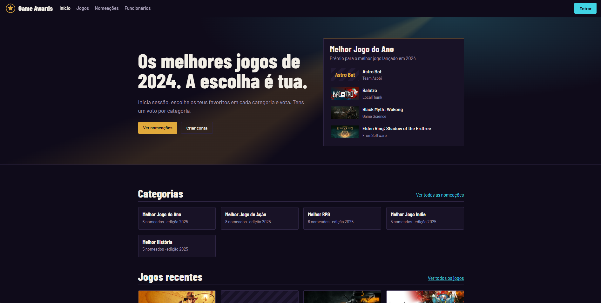
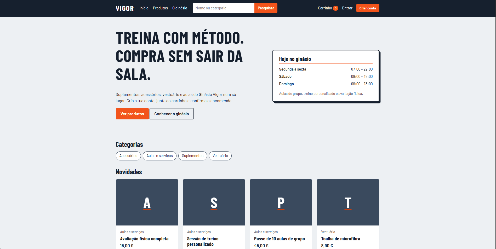
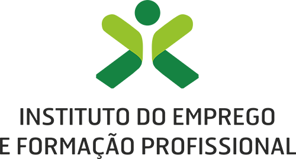

Sobre
O meu nome é Diogo Brito e ingressei no ramo informático na escola secundaria, iniciando com um curso de informática. Após isso ingressei no Instituto politécnico de Portalegre e entrei no Curso Técnico Superior Profissional de Desenvolvimento Web e Dispositivos móveis, após terminar o mesmo, comecei a minha lincenciatura no curso de Engenharia Informática, tendo realizado estágios e formações para adquirir alguma experiência profissional. Trabalhei num curto espaço de tempo em Outsystems. Concluí um estágio profissional que me deu ainda mais experiência a nível profissional, efetuei o mesmo na área de Analytics mais concretamente na plataforma Microsoft Power BI, no tempo em que estive envolvido com a mesma elaborei dois projetos internos para a Empresa que estava a estagiar. Atualmente estou a trabalhar na área de business intelligence
Projectos

Votação nos Game Awards

Compra de Aulas/Produtos em Ginásio
Tecnologias Usadas
Formação
-
Curso LPW
Local - IEFP
-
Curso de Design Web e Dispositivos Móveis
Local - Universidade Politécnica de Portalegrll